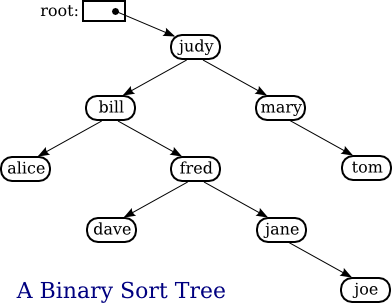
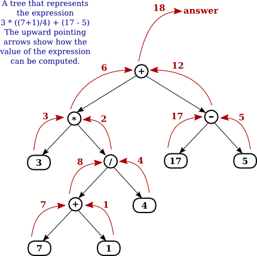

Binary Trees
We have seen in the two previous sections how objects can be linked into lists. When an object contains two pointers to objects of the same type, structures can be created that are much more complicated than linked lists. In this section, we'll look at one of the most basic and useful structures of this type: binary trees. Each of the objects in a binary tree contains two pointers, typically called left and right. In addition to these pointers, of course, the nodes can contain other types of data. For example, a binary tree of integers would be made up of objects of the following type:
class TreeNode {
int item; // The data in this node.
TreeNode left; // Pointer to the left subtree.
TreeNode right; // Pointer to the right subtree.
}The left and right pointers in a TreeNode can be null or can point to other objects of type TreeNode. A node that points to another node is said to be the parent of that node, and the node it points to is called a child. In a binary tree, a child is either a "left child" or a "right child," and a node can have a right child even if it has no left child. In the picture below, for example, node 3 is the parent of node 6, and nodes 4 and 5 are children of node 2. Not every linked structure made up of tree nodes is a binary tree. A binary tree must have the following properties: There is exactly one node in the tree which has no parent; this node is called the root of the tree. Every other node in the tree has exactly one parent. Finally, there can be no loops in a binary tree. That is, it is not possible to follow a chain of pointers starting at some node and arriving back at the same node.

A node that has no children is called a leaf. A leaf node can be recognized by the fact that both the left and right pointers in the node are null. In the standard picture of a binary tree, the root node is shown at the top and the leaf nodes at the bottom—which doesn't show much respect for the analogy to real trees. But at least you can see the branching, tree-like structure that gives a binary tree its name.
Tree Traversal
Consider any node in a binary tree. Look at that node together with all its descendants (that is, its children, the children of its children, and so on). This set of nodes forms a binary tree, which is called a subtree of the original tree. For example, in the picture, nodes 2, 4, and 5 form a subtree. This subtree is called the left subtree of the root. Similarly, nodes 3 and 6 make up the right subtree of the root. We can consider any non-empty binary tree to be made up of a root node, a left subtree, and a right subtree. Either or both of the subtrees can be empty. This is a recursive definition, matching the recursive definition of the TreeNode class. So it should not be a surprise that recursive subroutines are often used to process trees.
Consider the problem of counting the nodes in a binary tree. As an exercise, you might try to come up with a non-recursive algorithm to do the counting, but you shouldn't expect to find one easily. The heart of the problem is keeping track of which nodes remain to be counted. It's not so easy to do this, and in fact it's not even possible without an auxiliary data structure such as a stack or queue. With recursion, however, the algorithm is almost trivial. Either the tree is empty or it consists of a root and two subtrees. If the tree is empty, the number of nodes is zero. (This is the base case of the recursion.) Otherwise, use recursion to count the nodes in each subtree. Add the results from the subtrees together, and add one to count the root. This gives the total number of nodes in the tree. Written out in Java:
/**
* Count the nodes in the binary tree to which root points, and
* return the answer. If root is null, the answer is zero.
*/
static int countNodes( TreeNode root ) {
if ( root == null ) { // Base case: empty tree.
return 0; // An empty tree contains no nodes.
}
else { // Recursive case: root node plus two subtrees.
int count = 1; // Start by counting the root.
count += countNodes(root.left); // Add the number of nodes
// in the left subtree.
count += countNodes(root.right); // Add the number of nodes
// in the right subtree.
return count; // Return the total.
}
} // end countNodes()Or, consider the problem of printing the items in a binary tree. If the tree is empty, there is nothing to do. If the tree is non-empty, then it consists of a root and two subtrees. Print the item in the root and use recursion to print the items in the subtrees. Here is a subroutine that prints all the items on one line of output:
/**
* Print all the items in the tree to which root points.
* The item in the root is printed first, followed by the
* items in the left subtree and then the items in the
* right subtree.
*/
static void preorderPrint( TreeNode root ) {
if ( root != null ) { // (Otherwise, there's nothing to print.)
System.out.print( root.item + " " ); // Print the root item.
preorderPrint( root.left ); // Print items in left subtree.
preorderPrint( root.right ); // Print items in right subtree.
}
} // end preorderPrint()This routine is called "preorderPrint" because it uses a preorder traversal of the tree. In a preorder traversal, the root node of the tree is processed first, then the left subtree is traversed, then the right subtree. In a postorder traversal, the left subtree is traversed, then the right subtree, and then the root node is processed. And in an inorder traversal, the left subtree is traversed first, then the root node is processed, then the right subtree is traversed. Subroutines that use postorder and inorder traversal to print the contents of a tree differ from preorderPrint() only in the placement of the statement that outputs the root item:
/**
* Print all the items in the tree to which root points.
* The items in the left subtree are printed first, followed
* by the items in the right subtree and then the item
* in the root node.
*/
static void postorderPrint( TreeNode root ) {
if ( root != null ) { // (Otherwise, there's nothing to print.)
postorderPrint( root.left ); // Print items in left subtree.
postorderPrint( root.right ); // Print items in right subtree.
System.out.print( root.item + " " ); // Print the root item.
}
} // end postorderPrint()
/**
* Print all the items in the tree to which root points.
* The items in the left subtree are printed first, followed
* by the item in the root node and then the items
* in the right subtree.
*/
static void inorderPrint( TreeNode root ) {
if ( root != null ) { // (Otherwise, there's nothing to print.)
inorderPrint( root.left ); // Print items in left subtree.
System.out.print( root.item + " " ); // Print the root item.
inorderPrint( root.right ); // Print items in right subtree.
}
} // end inorderPrint()Each of these subroutines can be applied to the binary tree shown in the illustration at the beginning of this section. The order in which the items are printed differs in each case:
preorderPrint outputs: 1 2 4 5 3 6
postorderPrint outputs: 4 5 2 6 3 1
inorderPrint outputs: 4 2 5 1 3 6In preorderPrint, for example, the item at the root of the tree, 1, is output before anything else. But the preorder printing also applies to each of the subtrees of the root. The root item of the left subtree, 2, is printed before the other items in that subtree, 4 and 5. As for the right subtree of the root, 3 is output before 6. A preorder traversal applies at all levels in the tree. The other two traversal orders can be analyzed similarly.
Binary Sort Trees
One of the examples in Section 9.2 was a linked list of strings, in which the strings were kept in increasing order. While a linked list works well for a small number of strings, it becomes inefficient for a large number of items. When inserting an item into the list, searching for that item's position requires looking at, on average, half the items in the list. Finding an item in the list requires a similar amount of time. If the strings are stored in a sorted array instead of in a linked list, then searching becomes more efficient because binary search can be used. However, inserting a new item into the array is still inefficient since it means moving, on average, half of the items in the array to make a space for the new item. A binary tree can be used to store an ordered list in a way that makes both searching and insertion efficient. A binary tree used in this way is called a binary sort tree or BST.
A binary sort tree is a binary tree with the following property: For every node in the tree, the item in that node is greater than or equal to every item in the left subtree of that node, and it is less than or equal to all the items in the right subtree of that node. Here for example is a binary sort tree containing items of type String. (In this picture, I haven't bothered to draw all the pointer variables. Non-null pointers are shown as arrows.)

Binary sort trees have this useful property: An inorder traversal of the tree will process the items in increasing order. In fact, this is really just another way of expressing the definition. For example, if an inorder traversal is used to print the items in the tree shown above, then the items will be in alphabetical order. The definition of an inorder traversal guarantees that all the items in the left subtree of "judy" are printed before "judy", and all the items in the right subtree of "judy" are printed after "judy". But the binary sort tree property guarantees that the items in the left subtree of "judy" are precisely those that precede "judy" in alphabetical order, and all the items in the right subtree follow "judy" in alphabetical order. So, we know that "judy" is output in its proper alphabetical position. But the same argument applies to the subtrees. "Bill" will be output after "alice" and before "fred" and its descendants. "Fred" will be output after "dave" and before "jane" and "joe". And so on.
Suppose that we want to search for a given item in a binary search tree. Compare that item to the root item of the tree. If they are equal, we're done. If the item we are looking for is less than the root item, then we need to search the left subtree of the root—the right subtree can be eliminated because it only contains items that are greater than or equal to the root. Similarly, if the item we are looking for is greater than the item in the root, then we only need to look in the right subtree. In either case, the same procedure can then be applied to search the subtree. Inserting a new item is similar: Start by searching the tree for the position where the new item belongs. When that position is found, create a new node and attach it to the tree at that position.
Searching and inserting are efficient operations on a binary search tree, provided that the tree is close to being balanced. A binary tree is balanced if for each node, the left subtree of that node contains approximately the same number of nodes as the right subtree. In a perfectly balanced tree, the two numbers differ by at most one. Not all binary trees are balanced, but if the tree is created by inserting items in a random order, there is a high probability that the tree is approximately balanced. (If the order of insertion is not random, however, it's quite possible for the tree to be very unbalanced.) During a search of any binary sort tree, every comparison eliminates one of two subtrees from further consideration. If the tree is balanced, that means cutting the number of items still under consideration in half. This is exactly the same as the binary search algorithm, and the result is a similarly efficient algorithm.
In terms of asymptotic analysis (Section 8.5), searching, inserting, and deleting in a binary search tree have average case run time Θ(log(n)). The problem size, n, is the number of items in the tree, and the average is taken over all the different orders in which the items could have been inserted into the tree. As long as the actual insertion order is random, the actual run time can be expected to be close to the average. However, the worst case run time for binary search tree operations is Θ(n), which is much worse than Θ(log(n)). The worst case occurs for particular insertion orders. For example, if the items are inserted into the tree in order of increasing size, then every item that is inserted moves always to the right as it moves down the tree. The result is a "tree" that looks more like a linked list, since it consists of a linear string of nodes strung together by their right child pointers. Operations on such a tree have the same performance as operations on a linked list. Now, there are data structures that are similar to simple binary sort trees, except that insertion and deletion of nodes are implemented in a way that will always keep the tree balanced, or almost balanced. For these data structures, searching, inserting, and deleting have both average case and worst case run times that are Θ(log(n)). Here, however, we will look at only the simple versions of inserting and searching.
The sample program SortTreeDemo.java is a demonstration of binary sort trees. The program includes subroutines that implement inorder traversal, searching, and insertion. We'll look at the latter two subroutines below. The main() routine tests the subroutines by letting you type in strings to be inserted into the tree.
In SortTreeDemo, nodes in the binary tree are represented using the following static nested class, which includes a simple constructor to make creating nodes easier:
/**
* An object of type TreeNode represents one node in a binary tree of strings.
*/
private static class TreeNode {
String item; // The data in this node.
TreeNode left; // Pointer to left subtree.
TreeNode right; // Pointer to right subtree.
TreeNode(String str) {
// Constructor. Make a node containing str.
// Note that left and right pointers are null.
item = str;
}
} // end class TreeNodeA static member variable of type TreeNode points to the binary sort tree that is used by the program:
private static TreeNode root; // Pointer to the root node in the tree.
// When the tree is empty, root is null.A recursive subroutine named treeContains is used to search for a given item in the tree. This routine implements the search algorithm for binary trees that was outlined above:
/**
* Return true if item is one of the items in the binary
* sort tree to which root points. Return false if not.
*/
static boolean treeContains( TreeNode root, String item ) {
if ( root == null ) {
// Tree is empty, so it certainly doesn't contain item.
return false;
}
else if ( item.equals(root.item) ) {
// Yes, the item has been found in the root node.
return true;
}
else if ( item.compareTo(root.item) < 0 ) {
// If the item occurs, it must be in the left subtree.
return treeContains( root.left, item );
}
else {
// If the item occurs, it must be in the right subtree.
return treeContains( root.right, item );
}
} // end treeContains()When this routine is called in the main() routine, the first parameter is the static member variable root, which points to the root of the entire binary sort tree.
It's worth noting that recursion is not really essential in this case. A simple, non-recursive algorithm for searching a binary sort tree follows the rule: Start at the root and move down the tree until you find the item or reach a null pointer. Since the search follows a single path down the tree, it can be implemented as a while loop. Here is a non-recursive version of the search routine:
private static boolean treeContainsNR( TreeNode root, String item ) {
TreeNode runner; // For "running" down the tree.
runner = root; // Start at the root node.
while (true) {
if (runner == null) {
// We've fallen off the tree without finding item.
return false;
}
else if ( item.equals(runner.item) ) {
// We've found the item.
return true;
}
else if ( item.compareTo(runner.item) < 0 ) {
// If the item occurs, it must be in the left subtree.
// So, advance the runner down one level to the left.
runner = runner.left;
}
else {
// If the item occurs, it must be in the right subtree.
// So, advance the runner down one level to the right.
runner = runner.right;
}
} // end while
} // end treeContainsNR();The subroutine for inserting a new item into the tree turns out to be more similar to the non-recursive search routine than to the recursive. The insertion routine has to handle the case where the tree is empty. In that case, the value of root must be changed to point to a node that contains the new item:
root = new TreeNode( newItem ); But this means, effectively, that the root can't be passed as a parameter to the subroutine, because it is impossible for a subroutine to change the value stored in an actual parameter. (I should note that this is something that is possible in other languages.) Recursion uses parameters in an essential way. There are ugly ways to work around the problem, but the easiest thing is just to use a non-recursive insertion routine that accesses the static member variable root directly. One difference between inserting an item and searching for an item is that we have to be careful not to fall off the tree. That is, we have to stop searching just before runner becomes null. When we get to an empty spot in the tree, that's where we have to insert the new node:
/**
* Add the item to the binary sort tree to which the global variable
* "root" refers. (Note that root can't be passed as a parameter to
* this routine because the value of root might change, and a change
* in the value of a formal parameter does not change the actual parameter.)
*/
private static void treeInsert(String newItem) {
if ( root == null ) {
// The tree is empty. Set root to point to a new node containing
// the new item. This becomes the only node in the tree.
root = new TreeNode( newItem );
return;
}
TreeNode runner; // Runs down the tree to find a place for newItem.
runner = root; // Start at the root.
while (true) {
if ( newItem.compareTo(runner.item) < 0 ) {
// Since the new item is less than the item in runner,
// it belongs in the left subtree of runner. If there
// is an open space at runner.left, add a new node there.
// Otherwise, advance runner down one level to the left.
if ( runner.left == null ) {
runner.left = new TreeNode( newItem );
return; // New item has been added to the tree.
}
else
runner = runner.left;
}
else {
// Since the new item is greater than or equal to the item in
// runner, it belongs in the right subtree of runner. If there
// is an open space at runner.right, add a new node there.
// Otherwise, advance runner down one level to the right.
if ( runner.right == null ) {
runner.right = new TreeNode( newItem );
return; // New item has been added to the tree.
}
else
runner = runner.right;
}
} // end while
} // end treeInsert()Expression Trees
Another application of trees is to store mathematical expressions such as 15*(x+y) or sqrt(42)+7 in a convenient form. Let's stick for the moment to expressions made up of numbers and the operators +, -, *, and /. Consider the expression 3*((7+1)/4)+(17-5). This expression is made up of two subexpressions, 3*((7+1)/4) and (17-5), combined with the operator "+". When the expression is represented as a binary tree, the root node holds the operator +, while the subtrees of the root node represent the subexpressions 3*((7+1)/4) and (17-5). Every node in the tree holds either a number or an operator. A node that holds a number is a leaf node of the tree. A node that holds an operator has two subtrees representing the operands to which the operator applies. The tree is shown in the illustration below. I will refer to a tree of this type as an expression tree.
Given an expression tree, it's easy to find the value of the expression that it represents. Each node in the tree has an associated value. If the node is a leaf node, then its value is simply the number that the node contains. If the node contains an operator, then the associated value is computed by first finding the values of its child nodes and then applying the operator to those values. The process is shown by the upward-directed arrows in the illustration. The value computed for the root node is the value of the expression as a whole. There are other uses for expression trees. For example, a postorder traversal of the tree will output the postfix form of the expression.

An expression tree contains two types of nodes: nodes that contain numbers and nodes that contain operators. Furthermore, we might want to add other types of nodes to make the trees more useful, such as nodes that contain variables. If we want to work with expression trees in Java, how can we deal with this variety of nodes? One way—which will be frowned upon by object-oriented purists—is to include an instance variable in each node object to record which type of node it is:
enum NodeType { NUMBER, OPERATOR } // Possible kinds of node.
class ExpNode { // A node in an expression tree.
NodeType kind; // Which type of node is this?
double number; // The value in a node of type NUMBER.
char op; // The operator in a node of type OPERATOR.
ExpNode left; // Pointers to subtrees,
ExpNode right; // in a node of type OPERATOR.
ExpNode( double val ) {
// Constructor for making a node of type NUMBER.
kind = NodeType.NUMBER;
number = val;
}
ExpNode( char op, ExpNode left, ExpNode right ) {
// Constructor for making a node of type OPERATOR.
kind = NodeType.OPERATOR;
this.op = op;
this.left = left;
this.right = right;
}
} // end class ExpNodeGiven this definition, the following recursive subroutine will find the value of an expression tree:
static double getValue( ExpNode node ) {
// Return the value of the expression represented by
// the tree to which node refers. Node must be non-null.
if ( node.kind == NodeType.NUMBER ) {
// The value of a NUMBER node is the number it holds.
return node.number;
}
else { // The kind must be OPERATOR.
// Get the values of the operands and combine them
// using the operator.
double leftVal = getValue( node.left );
double rightVal = getValue( node.right );
switch ( node.op ) {
case '+': return leftVal + rightVal;
case '-': return leftVal - rightVal;
case '*': return leftVal * rightVal;
case '/': return leftVal / rightVal;
default: return Double.NaN; // Bad operator.
}
}
} // end getValue()Although this approach works, a more object-oriented approach is to note that since there are two types of nodes, there should be two classes to represent them, perhaps named ConstNode and BinOpNode. To represent the general idea of a node in an expression tree, we need another class, ExpNode. Both ConstNode and BinOpNode will be subclasses of ExpNode. Since any actual node will be either a ConstNode or a BinOpNode, ExpNode should be an abstract class. (See Subsection 5.5.5.) Since one of the things we want to do with nodes is find their values, each class should have an instance method for finding the value:
abstract class ExpNode {
// Represents a node of any type in an expression tree.
abstract double value(); // Return the value of this node.
} // end class ExpNode
class ConstNode extends ExpNode {
// Represents a node that holds a number.
double number; // The number in the node.
ConstNode( double val ) {
// Constructor. Create a node to hold val.
number = val;
}
double value() {
// The value is just the number that the node holds.
return number;
}
} // end class ConstNode
class BinOpNode extends ExpNode {
// Represents a node that holds an operator.
char op; // The operator.
ExpNode left; // The left operand.
ExpNode right; // The right operand.
BinOpNode( char op, ExpNode left, ExpNode right ) {
// Constructor. Create a node to hold the given data.
this.op = op;
this.left = left;
this.right = right;
}
double value() {
// To get the value, compute the value of the left and
// right operands, and combine them with the operator.
double leftVal = left.value();
double rightVal = right.value();
switch ( op ) {
case '+': return leftVal + rightVal;
case '-': return leftVal - rightVal;
case '*': return leftVal * rightVal;
case '/': return leftVal / rightVal;
default: return Double.NaN; // Bad operator.
}
}
} // end class BinOpNodeNote that the left and right operands of a BinOpNode are of type ExpNode, not BinOpNode. This allows the operand to be either a ConstNode or another BinOpNode—or any other type of ExpNode that we might eventually create. Since every ExpNode has a value() method, we can call left.value() to compute the value of the left operand. If left is in fact a ConstNode, this will call the value() method in the ConstNode class. If it is in fact a BinOpNode, then left.value() will call the value() method in the BinOpNode class. Each node knows how to compute its own value.
Although it might seem more complicated at first, the object-oriented approach has some real advantages. For one thing, it doesn't waste memory. In the original ExpNode class, only some of the instance variables in each node were actually used, and we needed an extra instance variable to keep track of the type of node. More important, though, is the fact that new types of nodes can be added more cleanly, since it can be done by creating a new subclass of ExpNode rather than by modifying an existing class.
We'll return to the topic of expression trees in the next section, where we'll see how to create an expression tree to represent a given expression.